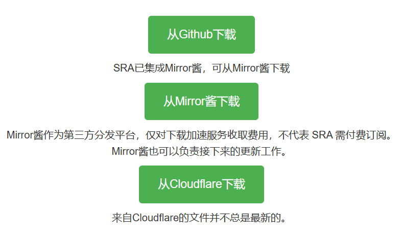
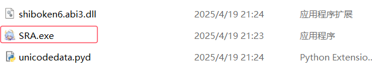
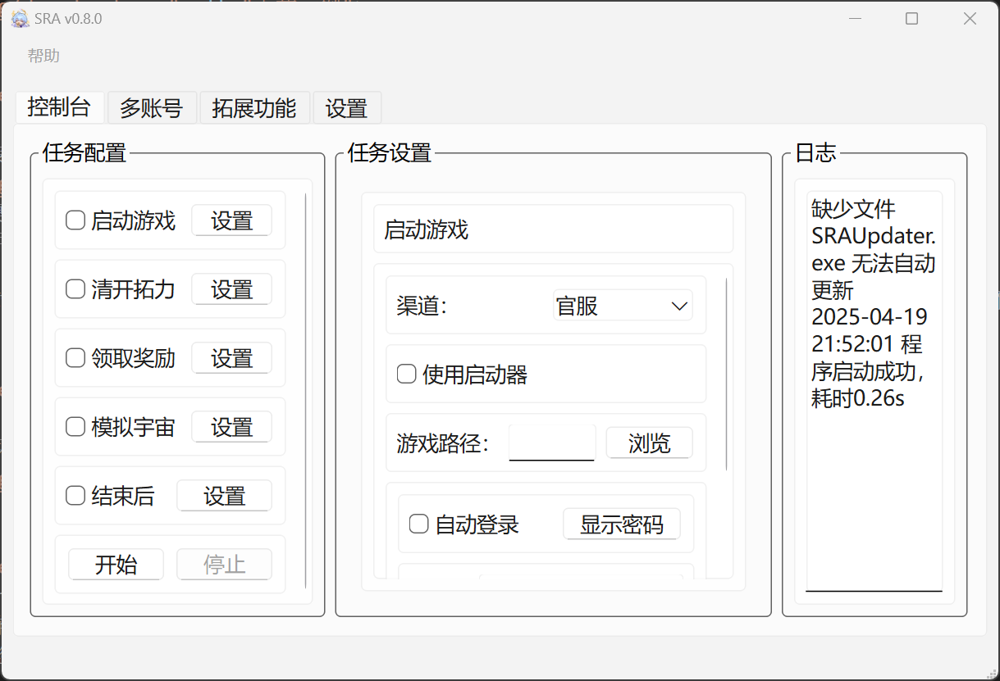
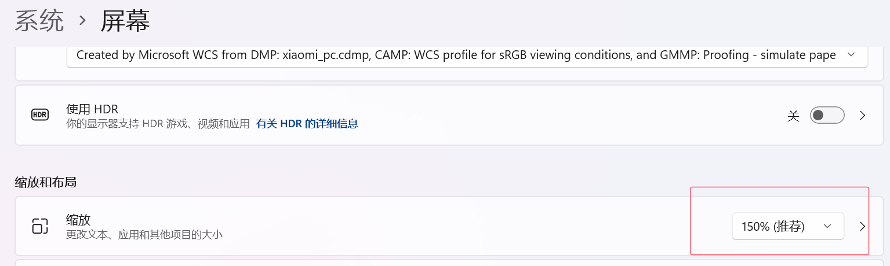
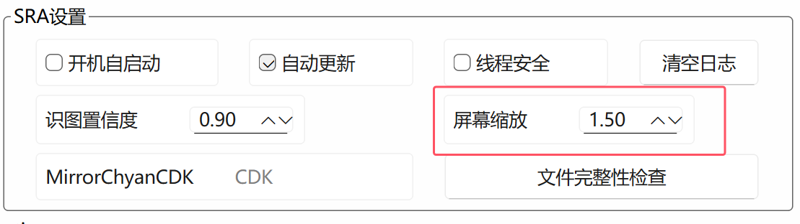
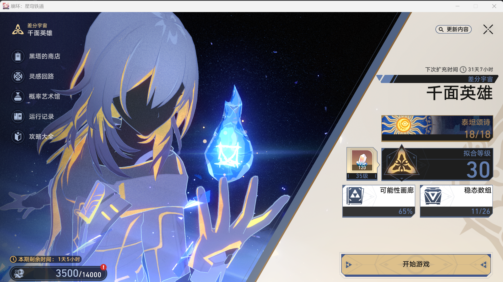
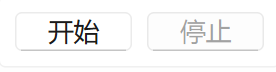
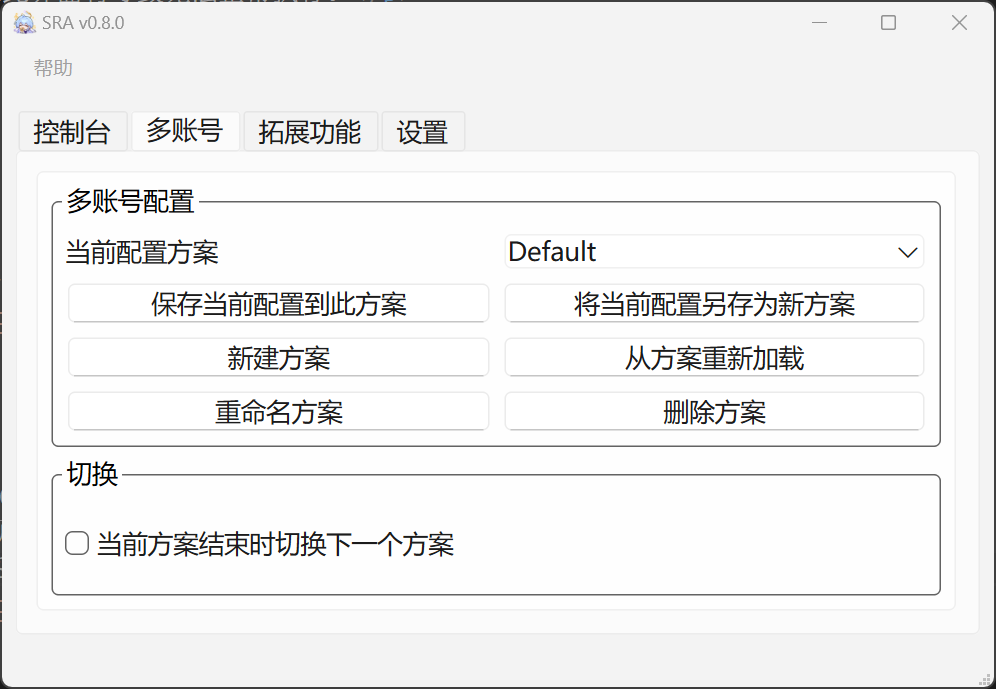
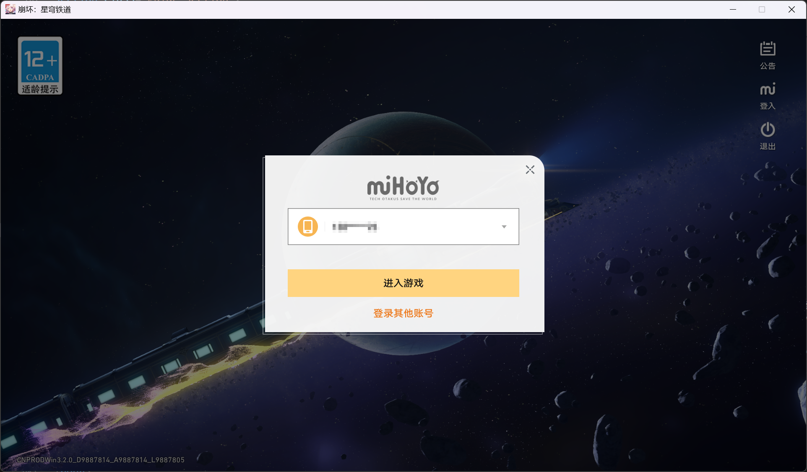

下载
前往 下载页面 选择任意渠道进行下载。
安装与启动
SRA采用绿色免安装形式，解压下载的文件，运行 `SRA.exe` 启动程序。
推荐为SRA创建快捷方式，但不要修改源程序的位置。
如果是首次运行，可能需要以管理员身份运行。
启动成功后，将同时弹出公告及主界面。点击确认可关闭公告，点击不再提醒可关闭公告并在直到版本更新的一段时间内不再弹出。
运行前配置
在首次任务前，需要点击上方‘设置’标签页调整SRA设置，包括：
键位设置：如果你更改了键位，比如将活动改成F5，每日实训改成F1。需要在此处同步更改。
屏幕缩放：此项需要调整到你的电脑的实际缩放  
其他设置项将在后面介绍。
注意事项
- 确保游戏分辨率为1920*1080。
- 首次运行时可能需要管理员权限。
任务配置
在主界面的左侧进行任务配置，勾选一个任务代表你启用它

启动游戏
在这个任务中，可以设置渠道（官服/b服）、是否用启动器启动、是否自动登录。 如果使用启动器启动，在下方的文件选择框中选择你的米哈游启动器的路径; 如果不使用启动器，则在下方选择游戏本体的路径。 如果使用错误的文件路径，无法通过路径检查。
有效的路径示例
D:/Star Rail/Game/StarRail.exe
接下来选择是否自动登录，如果启用，必须在输入框内填入内容，当启动游戏时如果游戏处于未登录状态，程序会自动填入你输入的账号密码并登录。 如果不启用，请确保你的游戏处于登录状态。
如果勾选在本地保存密码，账号和密码将以加密的方式存储在本地; 如果不勾选，只会存储密码。
清开拓力
在这个任务中，可以设置是否补充体力、通过何种方式补充、挑战的关卡等。
补充体力：每次补充60点，即取出60后备开拓力或使用一罐燃料或消耗星琼。
对于每类副本，勾选则代表启用，可以设置指定关卡，连战次数、挑战次数等。
可以勾选多类副本。当体力不足而未补充体力时，此后的战斗均不会执行。
领取奖励
在这个任务中包含了所有的每日奖励，如每日实训，无名勋礼。部分是默认启用的。
还可以领取兑换码奖励，勾选此项，并在兑换码输入框内输入兑换码，可以输入多个兑换码，兑换码之间用空格或换行分隔。
模拟宇宙
目前只支持差分宇宙-周期演算 刷单层，即反复刷取第一层获取等级。
注意：此项不支持与其它任务一同执行，因为它有特殊要求。
要执行差分宇宙任务，首先需要手动进入差分宇宙的主界面，如下图：
务必在此处开始执行，不在此界面将导致无法正常执行。
结束后
此任务用于控制任务结束后的行为，如登出账号、退出SRA、退出游戏、关机或休眠
执行与停止
在左侧最下方有执行按钮，完成任务配置后点击执行开始执行任务
如果想要停止任务，请按停止按钮。开始执行后，在右侧日志区可以观察运行日志。
多账号托管
仅限SRA v0.8.0+
在0.8.0版本中，更新类多账号配置相关功能。
点击上方‘多账号’进入标签页
每个‘配置方案’对应着一个账号的托管方案。
假设将要为A、B、C三个账号托管，对于账号A：
使用默认方案Default，到控制台中勾选需要执行的功能，在使用多账号时，这些功能是必须要勾选的：
- 自动登录（同时填充账号与密码）
- 在本地保存密码
- 退出当前账号
- 模拟宇宙
- 退出游戏
- 退出SRA
- 关机或休眠
完成任务配置后，不是点击开始，而是回到‘多账号’页，点击‘保存当前配置到此方案’，此时账号A的托管方案就配置完成并保存了。
对于账号B：
选择‘新建方案’，输入一个方案名称，例如‘planB’；点击‘当前方案’右侧选框，可以看到我们新建的planB，选中它，接下来像配置刚才的方案那样配置planB即可。记得保存方案。
如果你的账号B与A的托管计划完全相同，可直接点击‘将当前配置另存为新方案’，即可复制一份方案，不过记得修改这份方案的账号与密码。
对于账号C：同上。
现在我们有了三份方案，分别为Default、planB、planC，在‘多账号’页面勾选‘当前方案结束时切换下一个方案’，准备开始多账号托管。
为了使多账号托管按预期运行，建议先运行游戏并退出当前登录的账号，进入下面的界面：
回到SRA，点击‘开始’，即可开始一趟多账号托管之旅。
设置
此页面尚在编辑中